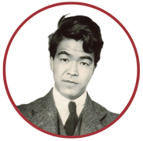

<link rel="stylesheet" href="../../assets/styles/yashiro-global.css">
<link rel="stylesheet" href="../../assets/styles/yashiro-header.css">
<link rel="stylesheet" href="../../assets/styles/yashiro-footer.css">
<link rel="stylesheet" href="../../assets/styles/yashiro-card-letter.css">
<link rel="stylesheet" href="../../assets/styles/yashiro-card-person.css">
<link rel="stylesheet" href="../../assets/styles/yashiro-simpleSearch.css">
<link rel="stylesheet" href="../../assets/styles/yashiro-search.css">
<link rel="stylesheet" href="../../assets/styles/yashiro-people.css">
<link rel="stylesheet" href="../../assets/styles/yashiro-annotation.css">
<link rel="stylesheet" href="../../assets/styles/yashiro-template.css">
<link rel="stylesheet" href="../../assets/styles/yashiro-home.css">

<bs-navbar id="yashiro-menu" class="itatti-navbar navbar navbar-default" role="navigation">
  <div class="rs-header">

    <semantic-link class="nav-logo" iri="yashiro:Start">
      
      <div class="nav-logo-text">
        <span class="nav-logo-title">Yashiro &amp; Berenson</span>
        <span class="nav-logo-subtitle">Art history between Japan and Italy</span>
      </div>
    </semantic-link>

    <bs-navbar-collapse class="pull-right">
      <bs-nav>

        <bs-nav-dropdown title="About" id="yashiro-about-dropdown">
          <bs-menu-item><semantic-link iri="yashiro:few-words-lino-pertile">A few words (Lino Pertile)</semantic-link></bs-menu-item>
          <bs-menu-item><semantic-link iri="yashiro:wakaba-yashiro-preface">Letter (Wakaba Yashiro)</semantic-link></bs-menu-item>
          <bs-menu-item><semantic-link iri="yashiro:introduction">The Yashiro–Berenson Correspondence (Koshikawa)</semantic-link></bs-menu-item>
          <bs-menu-item><semantic-link iri="yashiro:Presentation">Introduction (Jonathan K. Nelson)</semantic-link></bs-menu-item>
          <bs-menu-item><semantic-link iri="yashiro:colophon">Colophon</semantic-link></bs-menu-item>
        </bs-nav-dropdown>

        <bs-nav-dropdown title="Research" id="yashiro-research-dropdown">
          <bs-menu-item class="nav-group-label">Texts by Yashiro</bs-menu-item>
          <bs-menu-item><semantic-link iri="yashiro:autobiography-table-of-contents">My Life in the Fine Arts (1972)</semantic-link></bs-menu-item>
          <bs-menu-item><semantic-link iri="yashiro:botticelli">Sandro Botticelli (1925)</semantic-link></bs-menu-item>
          <bs-menu-item><semantic-link iri="yashiro:oriental-character">The "Oriental" Character (1952)</semantic-link></bs-menu-item>
          <bs-menu-item><semantic-link iri="yashiro:gallery">Gallery</semantic-link></bs-menu-item>
          <bs-menu-item class="nav-group-label">Studies on Yashiro</bs-menu-item>
          <bs-menu-item><semantic-link iri="yashiro:john-hatcher">Hatcher, "Yashiro, Binyon and Waley"</semantic-link></bs-menu-item>
          <bs-menu-item><semantic-link iri="yashiro:akira-takagishi">Takagishi, "A Japanese Historian of Western Art"</semantic-link></bs-menu-item>
          <bs-menu-item><semantic-link iri="yashiro:yamanashi">Yamanashi, "Yashiro and the Institute of Art Research"</semantic-link></bs-menu-item>
          <bs-menu-item class="nav-group-label">On Berenson</bs-menu-item> 
          <bs-menu-item><semantic-link iri="yashiro:michael-gorman">Gorman, "Berenson's Appreciation of Japanese Art"</semantic-link></bs-menu-item>
          <bs-menu-item><semantic-link iri="yashiro:carl-brandon-strehlke">Strehlke, "Bernard Berenson and Asian Art"</semantic-link></bs-menu-item>
        </bs-nav-dropdown>

        <bs-nav-item><semantic-link iri="yashiro:Letters">Letters</semantic-link></bs-nav-item>

        <bs-nav-item><semantic-link iri="yashiro:People">People</semantic-link></bs-nav-item>

      </bs-nav>
    </bs-navbar-collapse>

  </div>
</bs-navbar>
